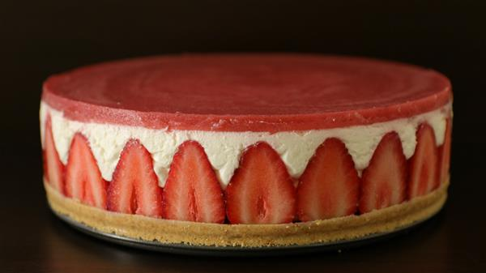

Strawberry Cheesecake

This recipe is for a luscious, creamy strawberry cheesecake. The picture ain't great, but you can make it look better than that with a wee garnish of strawberries on top. It goes a little something like this...
Ingredients
The Base
- Digestive biscuits (120g)
- Melted Butter (60g)
The Strawberry Cheesecake
- Strawberries (about 8)
- Cream cheese (400g)
- Sugar (80g)
- Double/whipping cream (150g)
- Lemon juice (1 tsp)
- Gelatin sheets (3)
- Milk (60ml)
The Top Layer
- Strawberries (150g)
- Sugar (1.5 tbspn)
- Water (50g)
- Double/whipping cream (75g)
- Gelatin sheet (1)
Instructions
The Base
- Blend/crush the biscuits into fine crumbs
- Melt the butter and add that and mix
- Press this into the base of the form/dish/pan (18cm springform pan is good)
- Put in the fridge to set
The Strawberry Cheesecake
- Slice the strawberries in half and place them round the form facing out (as per the picture)
- Put the cream cheese, sugar, double cream, and lemon juice together in a mixing bowl/blender, and mix till smooth.
- Prepare the gelatin sheets in iced water, and warm the milk
- Once ready add them sheets to the milk and mix together, then add this to the cream cheese mixture and blend till smooth again
- Pour the completed mixture into the form. Level, and put in the fridge to set.
The Top Layer
- Chop the strawberries and put them in a pan with the sugar and water: boil, reduce, puree
- Prepare a gelatin sheet, as before, then add this to the reduced and cooled, but still warm puree
- Add the double cream
- Pour this on top of the cake and put in the fridge to set
The Garnish
- Chop four beautiful strawberries - still with their leaves - in half
- Place them flat-face down, evenly spaced around the cake so that you'll have eight slices when it comes time to cut it
Let it all set nicely and then present and cut and serve to the slavering horde
Home